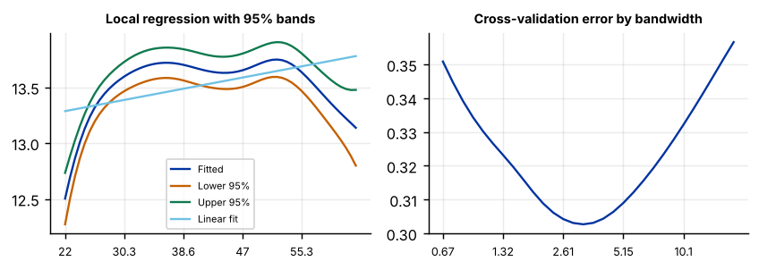

Run this model on your own data in Open Econometric Systems →
Step 1The question and the model
What is the shape of E(y | x) when we do not want to assume it? The local-linear estimator at a point \(x_0\) solves a weighted least-squares problem, with weights that fall with the distance from \(x_0\):
The bandwidth \(h\) controls the trade-off: a small \(h\) follows the noise, a large \(h\) approaches a straight line. We choose it by minimising the leave-one-out prediction error, which has a closed form for a linear smoother. A wild bootstrap compares the straight-line model with the kernel fit (Härdle and Mammen 1993).
How to write it: the model
We estimate the relation between log wages and age by local-linear kernel regression with a Gaussian kernel. The bandwidth is chosen by leave-one-out cross-validation. We compare the cross-validated error with polynomials of degree one to four, test the linear specification with a wild bootstrap, check the sensitivity to the bandwidth and to local-constant fitting, and check the method in a simulation with a known function.
Step 2Load the data
import numpy as np
import pandas as pd
import oes_engine as oes # pip install -e open-econometric-systems/oes-engine
d = pd.read_csv("cps71.csv")
print(len(d), "workers; age from", d.age.min(), "to", d.age.max())
print(d.groupby(pd.cut(d.age, [20, 30, 40, 50, 60, 70])).logwage.agg(["count", "mean"]).round(2))
def s(res, label):
return next(x["value"] for x in res["summary"] if x["label"] == label)205 workers; age from 21 to 65
count mean
age
(20, 30] 65 13.16
(30, 40] 53 13.73
(40, 50] 44 13.65
(50, 60] 35 13.63
(60, 70] 8 13.09How to read it
There are 205 workers aged 21 to 65. Mean log wage rises from 13.16 in the 21-30 band to 13.73 in the 31-40 band, stays near 13.6 up to age 60 and falls to 13.09 in the last band, which has only 8 workers. A straight line cannot describe this pattern: it rises, flattens and falls.
Step 3Estimate the regression function
spec = dict(y="logwage", x="age", reps=199, seed=1)
r = oes.run("kernreg", d.to_csv(index=False), spec)
oes.summary(r)
oes.show(r, "Fit and leave-one-out")
oes.show(r, "Bandwidth")
oes.show(r, "Test of a linear")Observations: 205
Bandwidth: 3.2713
Effective parameters: 6.76
CV error: 0.3027
Linearity test p-value: 0.005
Fit and leave-one-out cross-validation
Parameters (effective) CV error (MSE) In-sample MSE
Model
Polynomial of degree 1 (linear) 2.0000 0.3911 0.3813
Polynomial of degree 2 (quadratic) 3.0000 0.3222 0.3099
Polynomial of degree 3 (cubic) 4.0000 0.3197 0.3024
Polynomial of degree 4 (quartic) 5.0000 0.2950 0.2760
Local linear (gaussian, h = 3.271) 6.7646 0.3027 0.2752
Note: The effective number of parameters of the smoother is the trace of its hat matrix. A lower CV error means better prediction of held-out points.
Bandwidth
Value
Quantity
Selected bandwidth h 3.2713
Chosen by least-squares cross-validation
Rule-of-thumb bandwidth (1.06 s n^-1/5) 4.4693
CV minimiser on the grid 3.2713
Smallest bandwidth tried 0.6704
Largest bandwidth tried 17.877
Residual standard deviation 0.5355
R-squared (in sample) 0.3171
Note: A selected bandwidth at either end of the grid means the search should be widened.
Test of a linear specification
Statistic p-value Detail
Test
Linear regression against the kernel fit (Hardle-Mammen wild bootstrap) 18.7705 0.005 199 replications; H0: the regression function is linearHow to read it
Cross-validation selects a bandwidth of h = 3.27 years (the rule of thumb 1.06 s n^(-1/5) gives 4.47, which smooths more). The smoother uses 6.8 effective parameters. Its leave-one-out error is 0.303, against 0.391 for a straight line: the straight line predicts held-out workers about 29% worse. The wild-bootstrap test rejects linearity (statistic 18.8, p = 0.005 with 199 replications). The residual standard deviation is 0.54 and the in-sample R-squared is 0.32. A quartic polynomial has a slightly lower cross-validated error (0.295), so the kernel fit is not the only flexible model that works here, and the choice among them would matter little for prediction.
Step 4The estimated curve
oes.show(r, "Estimated regression function")
oes.plot(r)Estimated regression function
Fitted Lower 95% Upper 95% Slope
age
22.0000 12.5035 12.2731 12.7338 0.2356
25.4678 13.2344 13.1069 13.3618 0.1352
28.9356 13.5307 13.4040 13.6573 0.0628
32.4034 13.6682 13.5314 13.8049 0.0277
35.8712 13.7197 13.5840 13.8555 0.0023
39.3390 13.6910 13.5497 13.8324 -0.0162
42.8068 13.6378 13.4948 13.7807 -0.0115
46.2746 13.6414 13.4931 13.7898 0.0135
49.7424 13.7212 13.5703 13.8721 0.0244
53.2102 13.7295 13.5684 13.8906 -0.0196
56.6780 13.5469 13.3705 13.7234 -0.0635
60.1458 13.3088 13.0862 13.5313 -0.0674
Note: Pointwise 95% bands ignore the smoothing bias; they describe the variance of the estimate at the chosen bandwidth.
How to read it
The fitted log wage climbs from 12.50 at age 22 to 13.53 at age 29 and 13.72 at age 36, where the slope reaches zero. It then stays between 13.64 and 13.73 until age 53 and falls to 13.31 by age 60. Pointwise 95% bands are about ±0.23 at the ends and ±0.13 to ±0.14 in the middle, and they ignore the smoothing bias. The fall after 55 rests on few workers: only 8 are older than 60.
Step 5Robustness: bandwidth and degree
print("bandwidth effective parameters CV error")
for h in (1.5, 2.5, 3.27, 5, 8, 20):
e = oes.run("kernreg", d.to_csv(index=False), dict(y="logwage", x="age", bandwidth=h, reps=0))
print(f"{h:8.2f} {s(e, 'Effective parameters'):14.2f} {s(e, 'CV error'):18.4f}")
e0 = oes.run("kernreg", d.to_csv(index=False), dict(y="logwage", x="age", degree=0, reps=0))
print("local constant: h", s(e0, "Bandwidth"), ", CV error", s(e0, "CV error"), "; local linear: h", s(r, "Bandwidth"), ", CV error", s(r, "CV error"))
for k in ("epanechnikov", "gaussian"):
ek = oes.run("kernreg", d.to_csv(index=False), dict(y="logwage", x="age", kernel=k, reps=0))
print(k, "kernel: h", s(ek, "Bandwidth"), ", CV error", s(ek, "CV error"))bandwidth effective parameters CV error
1.50 13.28 0.3193
2.50 8.46 0.3049
3.27 6.77 0.3027
5.00 4.85 0.3083
8.00 3.54 0.3230
20.00 2.31 0.3613
local constant: h 1.8572 , CV error 0.3161 ; local linear: h 3.2713 , CV error 0.3027
epanechnikov kernel: h 7.1969 , CV error 0.3019
gaussian kernel: h 3.2713 , CV error 0.3027How to read it
The cross-validation error is flat near its minimum: 0.305 at h = 2.5, 0.303 at 3.27 and 0.308 at 5, while h = 1.5 (13 effective parameters) gives 0.319 and h = 20 (2.3 parameters, almost a straight line) gives 0.361. A local-constant fit needs a smaller bandwidth (1.86) and has a higher error (0.316) than the local-linear fit (0.303). The Epanechnikov kernel gives the same error (0.302), with a larger bandwidth because its window ends at h. The shape and the conclusion are the same for all reasonable choices.
Step 6Diagnostics: a simulation with a known function
rng = np.random.default_rng(0)
print(" n mean |error| kernel mean |error| line selected h")
for n in (100, 300, 1000):
ek = []; el = []; hh = []
for _ in range(10):
x = rng.uniform(0, 6, n); y = np.sin(x) + rng.normal(0, 0.4, n)
e = oes.run("kernreg", pd.DataFrame(dict(x=x, y=y)).to_csv(index=False), dict(y="y", x="x", reps=0))
g = np.array(e["tables"][3]["rows"], float)
ek.append(np.mean(np.abs(g[:, 1] - np.sin(g[:, 0])))); hh.append(s(e, "Bandwidth"))
b = np.polyfit(x, y, 1); el.append(np.mean(np.abs(np.polyval(b, g[:, 0]) - np.sin(g[:, 0]))))
print(f"{n:5d} {np.mean(ek):18.3f} {np.mean(el):18.3f} {np.mean(hh):12.2f}")
rej = 0
for k in range(30):
x = rng.uniform(0, 1, 100); y = 1 + 2 * x + rng.normal(0, 0.5, 100)
e = oes.run("kernreg", pd.DataFrame(dict(x=x, y=y)).to_csv(index=False), dict(y="y", x="x", reps=99, seed=k))
rej += s(e, "Linearity test p-value") < 0.05
print("linearity test, true line, rejections at 5%:", rej, "of 30")n mean |error| kernel mean |error| line selected h 100 0.092 0.364 0.30 300 0.053 0.366 0.29 1000 0.028 0.366 0.23 linearity test, true line, rejections at 5%: 3 of 30
How to read it
With a known sine function and noise of 0.4, the mean absolute error of the kernel fit falls with the sample: 0.092 with 100 observations, 0.053 with 300 and 0.028 with 1,000, while a straight line stays at 0.36 because its bias does not shrink. The selected bandwidth falls from 0.30 to 0.23 as the sample grows. When the true regression is a straight line, the linearity test rejects in 3 of 30 samples at the 5% level, which is consistent with the nominal rate for this number of samples.
Step 7Write the results
How to write it: results
We estimate the relation between log wages and age for 205 workers by local-linear kernel regression with a Gaussian kernel and a bandwidth of 3.3 years chosen by leave-one-out cross-validation. The estimated profile rises steeply from age 22 (12.50) to about age 36 (13.72), is flat until the early fifties and falls afterwards (13.31 at age 60). A straight line predicts held-out workers worse than the kernel fit (cross-validated error 0.39 against 0.30), and a wild-bootstrap test rejects linearity (p = 0.005). A quartic polynomial predicts about as well as the kernel fit, the shape is stable for bandwidths between 2.5 and 5, and the estimate at the oldest ages rests on few workers. In a simulation the kernel fit recovers a known nonlinear function, with an error that falls as the sample grows.
References. Nadaraya (1964), Theory of Probability and its Applications; Watson (1964), Sankhya; Fan and Gijbels (1996), Local Polynomial Modelling and its Applications; Härdle and Mammen (1993), Annals of Statistics; Pagan and Ullah (1999), Nonparametric Econometrics.